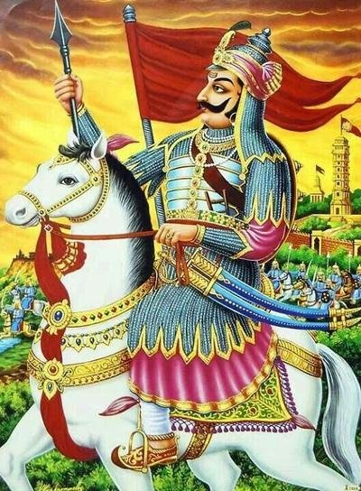
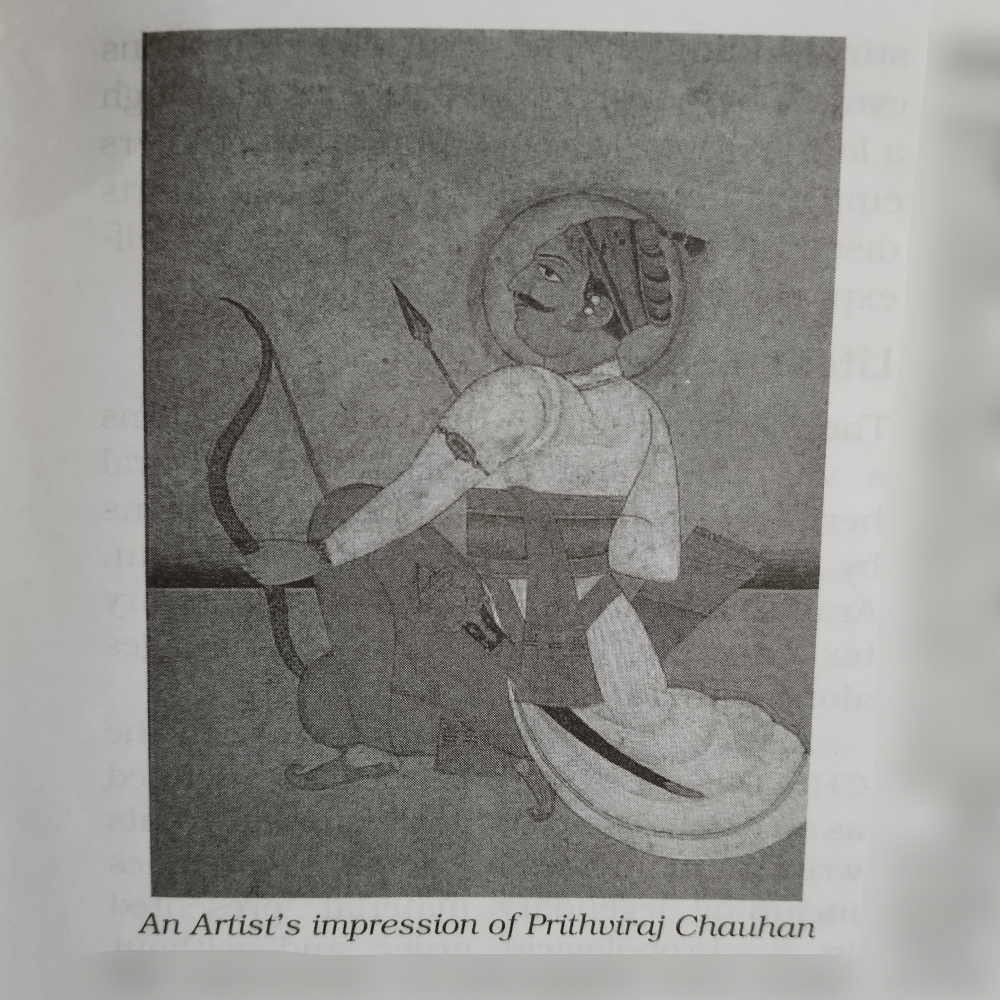
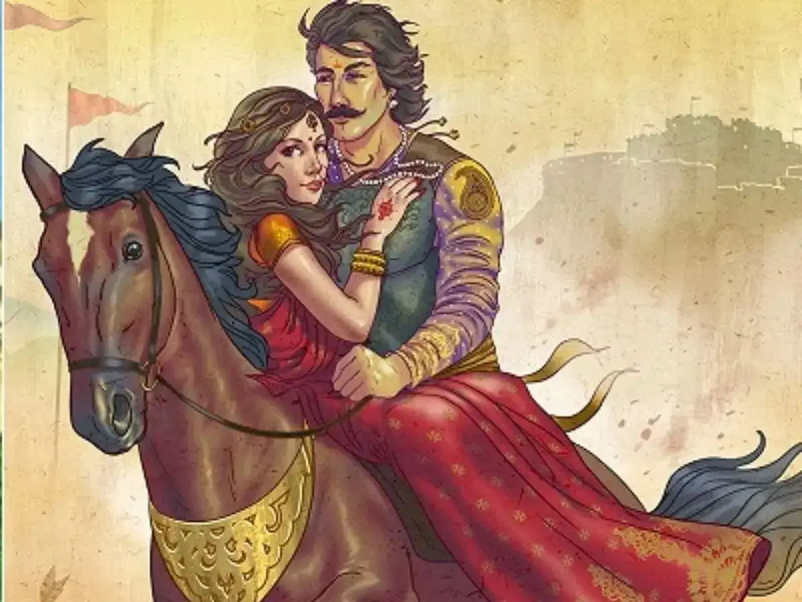
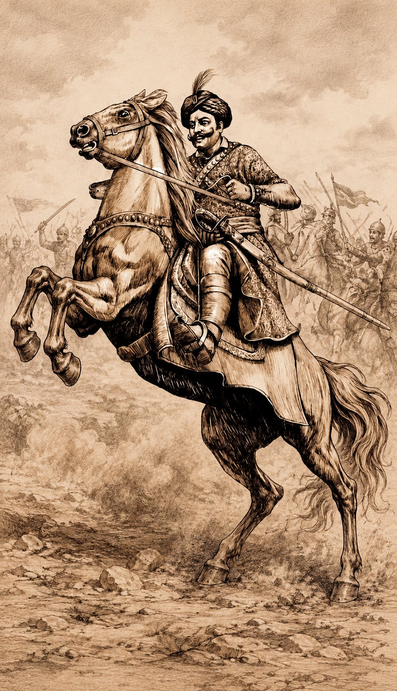
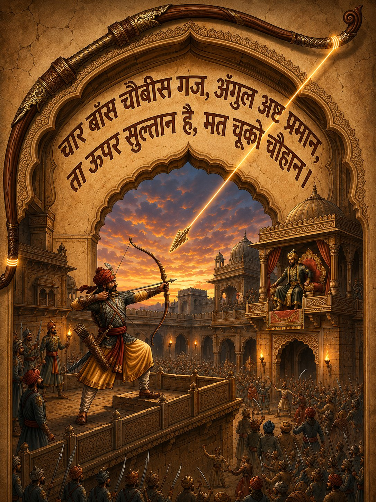
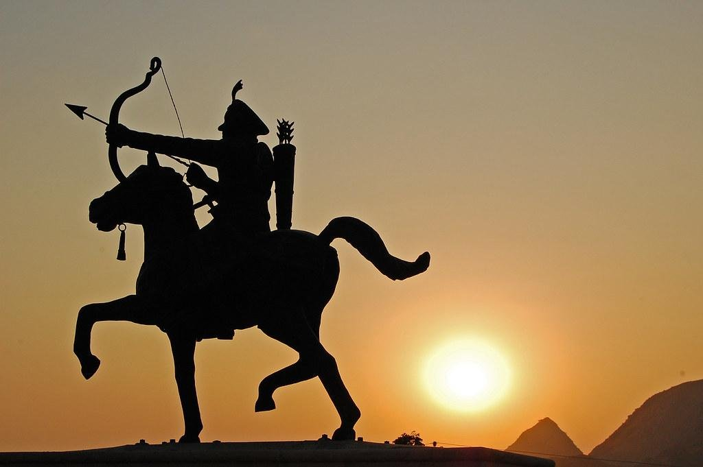
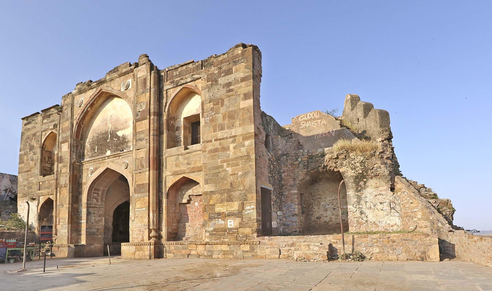
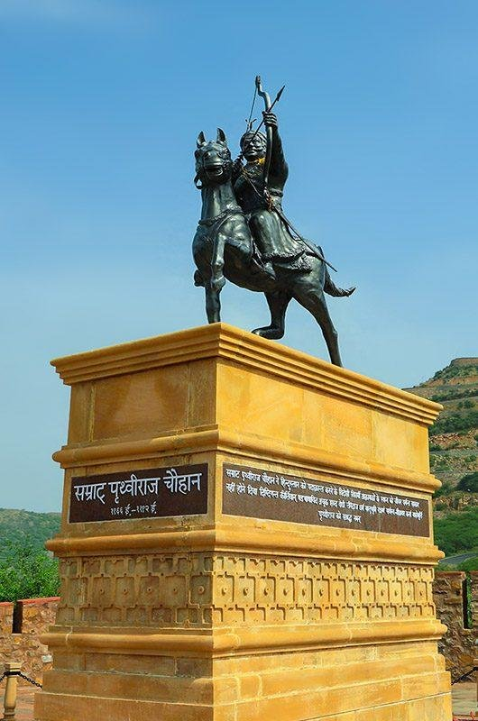
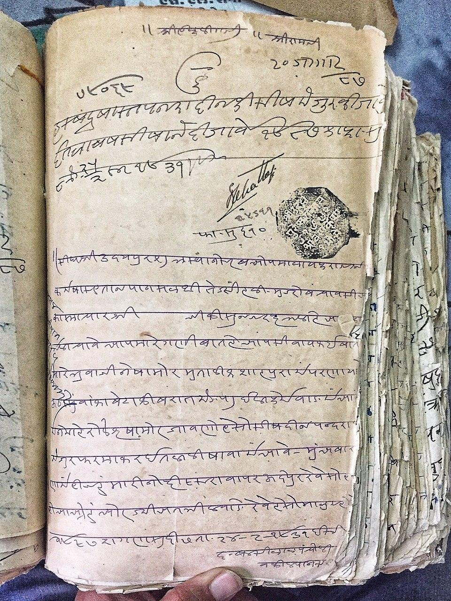
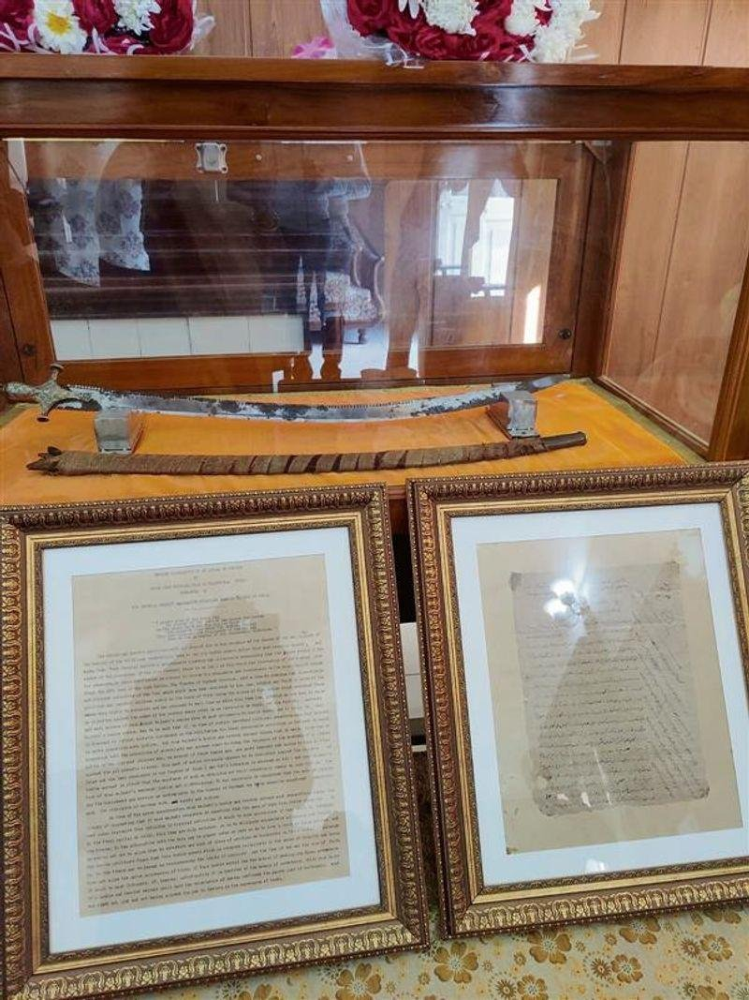

OUR FAMILY HISTORY & THE CHAUHAN LEGACY
The Eternal Flame: The Legacy of the Chauhan Rajputs
Our Family History & The Chauhan Legacy
The story of our family is not merely one of business, but of a 1,500-year-old bloodline defined by unyielding resilience, honor, and an indomitable spirit. Our roots trace back to the very foundations of Hindustan, beginning with Shri Vasudev Singh Ji Chauhan in 551 AD and ascending to the legendary reign of Shri Prithviraj Singh Ji Chauhan III, from whom the legacy descends through the ages to the time of Shri Heera Singh Ji Chauhan, Shri Moti Singh Ji Chauhan, and Shri Mangal Singh Ji Chauhan.
The story of our family is not merely one of modern enterprise; it is a continuation of an ancient royal legacy. Our journey is defined by the blood of emperors, the resilience of warriors, and an unwavering commitment to honor that has survived for over a millennium.


The Zenith of Empire and the Last Great Stand
For over six centuries, the Chauhan Rajputs stood among the foremost ruling dynasties of Hindustan, defending their lands with courage, honor, and an unwavering commitment to dharma. At the pinnacle of this golden era stood Shri Prithviraj Singh Ji Chauhan III, the great Emperor of Delhi and Ajmer, whose name continues to echo through the centuries as a symbol of valor, leadership, and sacrifice.
Blessed with extraordinary skill in warfare and renowned for his unmatched mastery of the divine archery art known as Shabd Bhedi Baan—a feat not witnessed since Raja Dashratha in the Satyuga—Samrat Prithviraj Chauhan commanded the respect of allies and adversaries alike.
His battlefield victories, statesmanship, and unwavering sense of justice established him among the most celebrated warrior kings in the history of Hindustan. Under his reign, the Chauhan banner flew proudly across vast territories, and his reputation for courage, magnanimity, and honor became legendary.
The Legendary Love of Sanyogita and Prithviraj
Beyond the battlefield and the throne, there was another chapter of his life that would become immortal. It was a story not of conquest, but of love—a love so powerful that it defied kingdoms, challenged tradition, and ultimately altered the destiny of empires.
Among the many tales that have echoed through the centuries, none is remembered with greater passion than the legendary love story of Samrat Prithviraj Chauhan and Rajkumari Sanyogita of Kannauj. Long before they ever met, their hearts were drawn together through painted portraits and whispered tales of beauty, greatness, and courage.
When Rajkumari Sanyogita learned of her father's plan to force her into a marriage of his choosing, she secretly sent a message to Prithviraj Chauhan, pledging her devotion to him alone. In response, the Emperor rode to Kannauj in disguise.
Determined to humiliate the Chauhan Emperor, King Jaichand placed a clay statue of Prithviraj Chauhan at the entrance of the assembly as a gatekeeper. Yet true love knows neither fear nor pride. Sanyogita walked past all the gathered kings and placed her bridal garland around the neck of the statue. Prithviraj emerged from concealment, lifted his bride onto his stallion, and rode away, cementing one of the most celebrated romances in Indian history.


The Betrayal and the Battle of Tarain
The Battle of Tarain in 1192 AD fundamentally altered the course of Indian history. According to traditions preserved through generations, Muhammad Ghori had attacked Samrat Prithviraj Chauhan seventeen times and was defeated on each occasion. Displaying the Rajput magnanimity that defined his character, Samrat Prithviraj Chauhan spared his adversary and allowed him to depart after every defeat.
However, King Jaichand, driven by envy over the epic and defiant love story between his daughter, Rajkumari Sanyogita, and the Emperor, betrayed his own son-in-law. On the eighteenth invasion, aided by Jaichand's betrayal, Samrat Prithviraj Chauhan was defeated and captured.
The Blinded Emperor & The Shabd Bhedi Baan
In captivity, the Emperor was blinded with hot iron rods, yet his spirit remained unbroken. Chand Bardai, his court poet, composed the famous verse to guide him:
"Char Bans Chaibis Gaj, Angul Ashta Praman,
Ta upar sultan hai, mat chuko Chauhan."

Using only the sound of Ghori’s voice, the blinded Emperor unleashed a single arrow—the Shabd Bhedi Baan—striking down Muhammad Ghori in his own court before sacrificing his own life. The story remains one of the most cherished symbols of Rajput courage, honor, and unwavering spirit, passed down through generations.


The Exodus and the Flight to Siwan
Pursued by the relentless forces of the enemy, our forefathers left the ancestral seat of Ajmer, seeking refuge and regrouping in Mainpuri, near Agra. For decades, they lived in the shadows of their former glory, preserving their identity and awaiting the opportunity to reclaim their heritage until subsequent invasions brought further destruction.
Driven by the need to survive and to keep the clan alive, six brothers of our direct bloodline mounted their horses and journeyed eastward, eventually reaching Siwan in Bihar.
In Siwan, they encountered a local ruler who had once served under the great Emperor Prithviraj and still held profound respect for the Chauhan name. He offerred them a challenge: to ride eastward and, within twenty-four hours, cover as much ground as possible on horseback. Whatever land they covered would belong to them forever.
The brothers rode with the strength and spirit of their ancestors, claiming nearly six hundred bighas of land. Because they arrived as warriors on horseback, the village they founded came to be known as Ghorgahiya (derived from Ghor meaning horse, and Gahiya meaning village).
The Era of the Hidden Clan & Adopting "Singh"
To protect the future of the lineage, the brothers entered a period of concealment. They intentionally dropped the title of Chauhan to evade the reach of Ghori’s soldiers, adopting only Singh as their surname—a protective practice so enduring that even today many historical family documents do not carry the Chauhan name.
Of those six brothers, four established the families that grew into over six hundred Chauhan Rajput households that inhabit Ghorgahiya today. The village remains uniquely known for having only one single clan of Rajputs across the entire village, preserving their ancestral warrior traditions through generations.

A Legacy Restored to the Soil
The final chapter of this epic was written in 2005, when the ashes (Asthiyan) of Shri Prithviraj Singh Ji Chauhan III were brought back from Afghanistan to India by Shri Sher Singh Rana. Today, they rest near the land once ruled by the great Chauhan emperor, while the ruins associated with the ancient seat of Ajmer stand as silent witnesses to a turbulent past.
"We do not merely lead a business; we carry the weight and the glory of fifteen centuries of history. Every decision we make is guided by the same spirit of resilience that carried our forefathers on horseback from Ajmer to Ghorgahiya."
For us, this is more than history—it is inheritance. More than memory—it is identity. And more than legacy—it is duty.
THE UNBROKEN CHAIN: OUR DIRECT LINEAGE
Shri Vasudev Singh Ji Chauhan
Laid the foundations of the Chauhan dynasty in Sambhar and Ajmer, establishing a lineage of sovereign rulers.
Samrat Prithviraj Singh Ji Chauhan III
The legendary Emperor of Delhi and Ajmer. Renowned for his absolute valor, the love of Sanyogita, and the legendary feat of the Shabd Bhedi Baan.
Shri Pragash Singh Ji Chauhan
Led the family during transitional periods, preserving the bloodline's royal records and identity.
Shri Dimag Singh Ji Chauhan
Maintained the family's landholdings and community stewardship in Ghorgahiya, Bihar.
Shri Amar Singh Ji Chauhan
Kept alive the oral traditions, martial history, and family values through times of socio-political changes.
Shri Jamdar Singh Ji Chauhan
Respected elder who managed ancestral estates and nurtured the family's values of integrity and courage.
Shri Heera Singh Ji, Shri Moti Singh Ji, & Shri Mangal Singh Ji Chauhan
Shri Heera Singh Ji (The Eldest, known as "The Man with a Golden Heart"), Shri Moti Singh Ji (The Middle), and Shri Mangal Singh Ji (The Youngest). Together, they preserved the family's honor and expanded their stewardship.
Shri Ravindra Singh Ji Chauhan & Smt. Sunita Singh Ji
Stout pillars of the modern family, passing down the ancestral flame of Rajput resilience, dignity, and hospitality values.
Shri Sumant Singh Chauhan & Shri Sourav Singh Chauhan
Carrying the glory, honor, and weight of fifteen centuries of history into modern global arenas of luxury hospitality and business leadership.
HERITAGE PROOFS & ARTIFACTS
Registered documents and physical remnants witnessing the lineage
The Ancestral Ruins
The ancient ruins and architectural remains associated with the ancestral seat of the Chauhan clan.

Genealogy Records
Registered documents tracing the name transition and direct bloodline connections from Singh to Chauhan.

Family Book Proofs
Documentary evidence, family books, and credentials validating the historical lineage through generations.